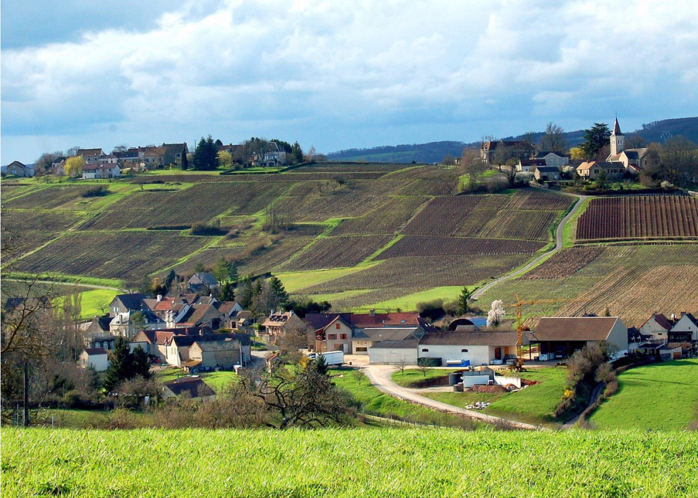

鸿丹酒庄
酒庄简介：
酒庄位于默尔索（Meursault）是勃艮第（Burgundy）子产区伯尔尼丘（Cote de Beaune）的一个村庄，是勃良第最精彩的白酒产区之一，所产葡萄酒可与普尼-蒙哈榭的酒相媲美，在世界各地著名的餐厅都有出售。
鸿丹的庄园已有180年的历史，现任庄主Henri于1999年从父亲承继酒庄至今。鸿丹采取全天然种植，95％人手采摘，所有酒最少经过18个月橡木桶和钢桶才灌瓶。大体而言，产区白葡萄酒呈金绿色或者金丝雀黄随着逐渐熟成，颜色会偏铜色。
酒液清澈透明而又光彩夺目，年轻时有烤杏仁和榛子的味道，并带有葡萄的醇香，偶有矿物质味，也有黄油，蜂蜜以及柑橘类水果的味道，口感饱满圆润，清新丝滑，是现在新世界酿造霞多丽（Chardonnay）的典范。
